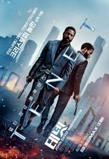

Movies
옛날부터 나는 영화 보는 것을 좋아했다.
대체로 장르를 불문하고 많은 영화들을 보지만, 그중에서도 특히 좋아하는 장르가 있다.
하나씩 말해보려고 한다.
Science-Fiction
사실, SF 라는 장르 자체가 생각보다 굉장히 넓다.
왜냐하면, 영화 속에 현존하지 않는 기술이 하나라도 나오는 순간, 해당 영화는 SF 영화이기 때문이다.
따라서, 사실 나는 SF 영화들을 모두 좋아하는 것은 아니다.
나는 지나치게 비현실적인 SF 영화는 싫어하는 편이다.
그런 영화들을 볼 시간에 차라리 판타지 영화들을 보는 것이 훨씬 낫다고 생각한다.
현실성이 어느 정도는 있어야 몰입이 된다고 생각하기에, 결국 나는 근미래를 다루거나, 혹은 먼 미래라고 할지라도, 실제로 일어날 법한 세계관을 다루는 SF 영화들이 좋다는 것이다.
내가 좋아하고, 실제로 여러 번 본 SF 영화들은 다음과 같다.
내가 가장 좋아하는 SF 영화는 ‘듄’ 시리즈다.
이 시리즈를 좋아하는 이유는 먼 미래를 배경으로 하면서도 기술 발전이 제한적이고, 현실적인 설정을 유지하기 때문이다.
예를 들어, ‘스파이스’라는 물질이 성간 여행에 필수적이고, 레이저 총보다 칼이 더 많이 사용되며, 중세적 체제를 연상시키는 설정이 돋보인다.
특히, 인류가 과거에 인공지능과 컴퓨터를 파괴하고 복잡한 계산을 인간이 대신하는 모습이 흥미로웠다.
이러한 독특한 세계관은 기존 SF 영화의 비현실적인 기술과는 차별화된다.
1편 이후 2편을 3년 동안 기다렸고, 영화는 기대를 충족시켰다. 또한, 영화의 원작 소설을 알게 된 후 구매해 읽고 있다.

‘테넷’은 SF 요소와 첩보 영화의 특징을 결합해 매우 흥미로운 영화다.
특히, "엔트로피는 항상 증가한다"는 열역학 법칙을 반박하며 세상이 거꾸로 흐르는 개념을 구현한 점이 참신하고 재밌다.
이 설정으로 인해 스토리가 매우 복잡해졌지만, 유튜브 해석 영상을 통해 이해를 깊게 하며 매번 새로운 해석을 발견하는 재미도 있다.
영화 아이언맨 시리즈는, 사실 나 뿐만 아니라, 거의 모든 사람이 좋아하는 시리즈라고 생각한다.
아이언맨 슈트를 입을 때 나는 그런 기계 소리들, 그리고 인공지능 “자비스”…
사실, 내가 인공지능 개발자라는 꿈을 가지게 된 것도 토니 스타크의 인공지능 비서, ‘자비스’ 같이,
항상 지니고 다니면서 나의 말동무가 되어줄 수 있는 그런 인공지능을 만들고 싶다는 생각에서 출발하게 된 것이다.
현재는 그런 인공지능을 만드는 건 커녕, 아주 간단한 인공지능 모델도 하나 만드는 데 엄청난 지식과 시간을 요구한다는 것을 알고 있는 상태이긴 하지만,
그래도 내가 어렸을 때 멋진 환상을 심어준 영화 시리즈이다. 언젠가는 그런 인공지능 만들고야 말 것이다.
인셉션의 경우, 천재적인 영화 감독인 ‘크리스토퍼 놀란’ 감독이 제작한 영화이다.
그런 만큼, 유명한 배우들이 정말 많이 등장하고, 스토리 또한 정말 잘 짜여 있다.
SF 적인 요소도 좋은데, 꿈 속의 꿈이라는 것을 주제로 한 것이 너무 흥미롭다.
Superhero Movies
히어로물의 경우, 내가 좋아하는 영화 장르들 중 가장 오래전부터 봐 왔고, 과거에 가장 좋아했던 영화 장르이다.
대체로 MCU 영화들을 매우매우 좋아했으며, MCU 영화들은 개봉과 동시에 보러 갔던 것 같다.
너무나도 좋아해서, 2017년 중학교 1학년 당시, MCU를 사랑하는 사람들의 모임, “마사모” 라는 네이버 밴드를 만들고, 1년 동안 운영을 했던 적도 있다.
MCU 영화도 좋아했지만, 다른 히어로 영화들 중 훌륭했던 영화들 역시 MCU 영화 만큼이나 좋아했다.
비록 현재는 망해가는 중이라고 생각하지만, 그 전까지만 해도 정말 좋아했던 히어로 영화들 중 제가 특히 좋아했던 히어로 영화들은 다음과 같다.
내가 왜 수많은 MCU 영화들을 방금 전까지만 해도 좋아한다고 이야기를 했는데,
왜 첫번째 영화로 MCU가 아닌 다른 영화를 소개하는지 의아할 것이다.
그 이유는 영화 다크나이트가 다른 MCU 영화들보다 훨씬 더 뛰어난 히어로 영화라고 생각하기 때문이다.
크리스토퍼 놀란 감독은 현실적인 히어로를 그려냈으며, 배트맨과 조커를 초인적인 존재가 아닌 평범한 인간으로 묘사해 몰입감을 높였다.
경찰이 배트맨을 쫓고, 시민들이 그를 비난하는 모습은 히어로의 존재 이유를 되묻게 한다는 점에서 매우 흥미로웠다.
캡틴 아메리카: 시빌 워는 내가 처음으로 영화관에서 본 MCU 영화다.
2016년, 만 12세가 되어 처음으로 MCU 영화를 극장에서 볼 수 있었고, 그때 개봉한 작품이 바로 이 영화였다.
캡틴 아메리카가 자신의 신념에 혼란을 느끼는 모습, 어벤져스가 감정적인 이유로 서로 충돌하는 장면, 그리고 힘이 아닌 계략으로 어벤져스를 와해시키는 제모 남작의 모습은 모두 매우 인상적이었다.

긴 말이 필요없다. 어벤져스: 엔드게임은 기존 마블 팬들을 위한 선물 같은 영화다.
이전 MCU 영화들을 오마주하는 장면들, 토니 스타크가 시간 여행으로 아버지와 만나는 장면,
캡틴 아메리카가 첫사랑 페기를 지켜보는 감동적인 장면들은 팬들에게 깊은 여운을 남겼다.
또한, 캡틴이 처음으로 자신만을 위한 선택을 하고, 아이언맨이 타인을 위해 희생하며,
이러한 두 캐릭터를 최대한 존중해주는 영화의 엔딩은 진정으로 감동적이고 매력적인 것이었다.

톰 홀랜드 주연의 스파이더맨 삼부작은 같은 MCU 내의 다른 히어로들의 삼부작과 달리, 세 작품 모두 좋은 작품이다.
우선, 해당 영화 시리즈에서 스파이더맨을 맡은 배우 톰 홀랜드가 너무나도 스파이더맨 역할에 찰떡이다.
외모며, 몸매며, 목소리며.. 안 어울리는 곳이 없다. 이렇게 찰떡인 배우가 연기를 하기에, 몰입이 안될 수가 없다.
배우 뿐만 아니라, 스토리, 그리고 영화에서 스파이더맨과 여러 빌런들 모두 매력적인 캐릭터들로 묘사되기 때문에,
욕하려고 해도 욕할 건덕지가 없다. 곧 스파이더맨 4가 나온다고 하는데 그 영화도 영화관에서 볼 수 있으면 좋겠다.
그러나, 군대 문제 때문에 어떻게 될지는 모르겠다.
War Movies
나는 사실 역사에 관심이 많은 학생이라고 할 수 있다.
한국사능력검정시험 1급도 땄고, 지금까지 4학기를 다녔는데, 그중 3개의 학기는 모두 역사 강의를 하나씩 수강한 학기이다.
여러 역사를 좋아하지만, 그중에서도 전쟁 관련 역사를 좋아한다.
전쟁이라는 것이 끔찍한 것은 잘 알지만, 그럼에도 불구하고, 전쟁 속에서 빛을 발휘한 지휘관의 이야기, 해당 전쟁 당시 각 나라 별 무기 기술 발전의 정도 비교 등을 살펴보면, 너무나도 재미있다.
또한, 역사적 사실이 어느 정도 어긋난다고 하더라도, 박진감 넘치게 전쟁 장면을 연출해 놓았다면, 해당 영화에 대한 평가를 조금 긍정적으로 하는 편이기도 하다.
주로 근, 현대에 유럽과 아메리카 대륙에서 일어났던 전쟁을 다룬 영화들을 좋아한다.
사실 전쟁 영화는 특별히 좋아하는 영화는 없고, 그냥 이것저것 보는 편인데, 그래도 기억에 남고 여러번 보는 영화를 고르자면, 다음과 같다.
나는 19세기 유럽의 나폴레옹 전쟁을 특히 좋아한다.
당시 군인들의 제복, 전열보병 전술, 그리고 최강의 카리스마를 자랑했던 나폴레옹의 몰락 과정이 흥미롭기 때문이다.
영화 워털루는 나폴레옹의 몰락을 가져온 워털루 전투를 다룬다.
1972년에 제작된 오래된 영화지만, 전투 장면의 스케일과 역사적 디테일이 뛰어나다.
특히, 나폴레옹과 웰링턴 공작의 심리 상태를 교차해 보여주는 연출과, 늙고 지친 나폴레옹의 모습이 인상적이었다.
이를 통해, 이렇게 위대한 나폴레옹도 결국 인간일 뿐이며, 영원한 것은 없다는 사실을 깨닫게 되었다.
자도빌 포위작전은 1961년 콩고 내전에서 유엔 평화유지군으로 파병된 아일랜드군 158명이
경험도, 병력도 압도적인 카탕가 반군과 용병 3000명에 맞선 기적 같은 전투를 다룬다.
전투 경험이 없는 아일랜드군이 사상자 없이 방어에 성공하고, 끝내 항복했지만 놀라운 성과를 낸 이야기가 인상적이다.
특히, 전투 후 당황하는 병사들과 전술책을 던지는 사령관 ‘퀸란’ 소령의 모습은 전쟁을 겪지 않은 군인들이 실제 전쟁에서 느낄 혼란을 생생히 보여준다.
이를 보며, 나 역시 군 복무 중 아무 일이 없기를 바라는 마음이 들었다.
Animations
애니메이션 또한 앞서 언급한 히어로물과 동일하게 옛날부터 봐왔지만, 앞의 두 장르와 달리 그렇게 좋아하지는 않았다.
그러나, 해외 여행에서 디즈니 랜드와 같은 놀이공원도 많이 가고, 일본 애니메이션 리뷰들을 보면서 점점 그 매력에 빠지게 된 것 같다.
소재 자체가 판타지적인 요소들이 많아 판타지 영화적인 성격을 띄기도 하고, 동시에 교훈적인 성격을 띄기도 한다.
그리고 무엇보다도, 영화로는 표현할 수 없는 느낌의 장면들을 효과적으로 표현해내는 것이 좋았다.
일본 애니메이션 원피스는 사실 최근 들어 좋아하게 된 애니메이션이다.
전 해적왕 '골D 로져’가 숨겨놓은 보물을 찾아 해적왕이 되려고 하는 해적들과 이를 막는 해군들, 그리고 세계정부에 맞서는 혁명군 세력 사이에서 벌어지는 이야기를 다룬다.
내가 이 애니메이션을 최근 들어 좋아하게 된 이유는, 세계관이 좋다고 생각하기 때문이다.
악마의 열매, 그리고 열매의 능력을 이용하는 능력자들과 그 능력을 무력화 시키는 해루석 이라는 원소와 패기 라는 기술들..
그들 스스로의 능력을 지니고 전투를 치르는 장면 하나하나 모두 좋은 것 같다. 간단하게 얘기하자면, 멋있어서 좋아한다.
소울은 내가 가장 좋아하는 디즈니 애니메이션이다.
이 영화는 감동적인 사랑 이야기나 위험천만한 모험을 다루지는 않는다.
오히려 ‘평범함’을 주제로, 평범한 삶의 아름다움과 소중함을 전달한다.
삶은 어떤 목적이나 특별한 사건이 있어서 아름다운 것이 아니라, 그 자체로 아름답다는 메시지가 깊은 인상을 남겼다.
적절한 음악과 스토리가 이 메시지를 잘 담아내어 더욱 감명 깊었다.